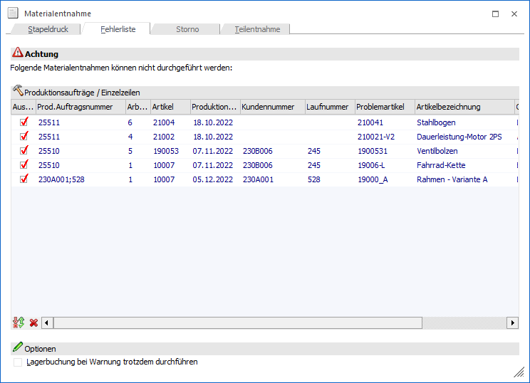
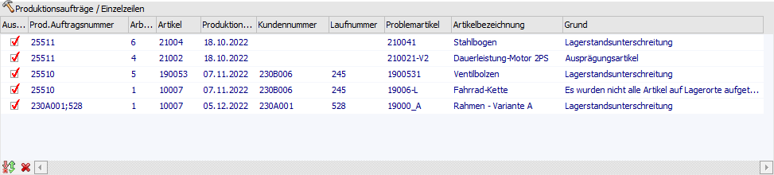
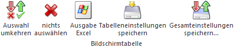
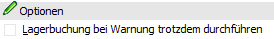
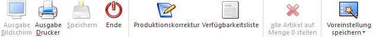

Das Register "Fehlerliste" ist nicht manuell anwählbar. In dieses wird automatisch gewechselt, wenn die Erstellung des Materialentnahmescheins für bestimmte Arbeitsschritte nicht möglich ist (z.B. aufgrund einer Lagerstandsunterscheitung).
Voraussetzung
Grundsätzlich muss folgende Voraussetzung erfüllt sein:
ü Lagerbuchung bei Erstellung einer
Materialentnahme
In den PPS-Parametern (Bereich "Buchungsschlüssel" - Option
"Materialentnahmeschein - Lagerabbuchung") muss die Lagerabbuchung aktiviert
worden sein.
Zusätzlich muss definiert werden "was" geprüft werden soll:
ü Prüfung auf
Lagerstandsunterscheitung
Wenn auf eine Lagerstandsunterschreitung geprüft
werden soll, so muss in den PPS-Parametern (Bereich "Parameter") die Option
"Lagerstandsunterschreitung" auf "1 - erlaubt mit Warnung" oder "2 - nicht
erlaubt" hinterlegt werden.
Hinweis
Diese Prüfung findet bei einer Ausgabe auf Drucker und Bildschirm statt.
ü Prüfung auf
Ausprägungs-Aufteilung
Wenn geprüft werden soll, ob eine Aufteilung auf
Ausprägungen stattgefunden hat, so muss in den Aufteilungsoptionen für
Ausprägungen (WinLine FAKT) die Aufteilungsart "1 - muss erfolgen" hinterlegt
worden sein (Bereich "Produktion - Produktionsendmeldung").
Hinweis
Diese Prüfung findet nur bei einer Ausgabe auf Drucker statt.
ü Prüfung auf
Lagerort-Aufteilung
Wenn geprüft werden soll, ob eine Aufteilung auf
Lagerorte stattgefunden hat, so muss in den Aufteilungsoptionen für Lagerorte
(WinLine FAKT) die Aufteilungsart "1 - muss erfolgen" hinterlegt worden sein
(Bereich "Produktion - Produktionsendmeldung").
Hinweis
Diese Prüfung findet nur bei einer Ausgabe auf Drucker statt.
Achtung
In den folgenden Fällen dient die Fehlerliste nur der Übersicht bzw. Information, d.h. eine Lagerbuchung ist nicht möglich:
ü Prüfung auf
Lagerstandsunterschreitung
Die Prüfung schlägt an, d.h. es wird der
Lagerstand unterschritten, wobei mit der Einstellung "2 - nicht erlaubt "
gearbeitet wird.
ü Prüfung auf Aufteilung
Die
Prüfung schlägt an, d.h. es fehlt in dem entsprechenden Arbeitsschritt eine
Aufteilung.

Folgende Einstellungen, Optionen und Informationen stehen zur Verfügung:
Tabelle "Produktionsaufträge / Einzelzeilen"

In der Tabelle werden jene Arbeitsschritte ausgewiesen, für welche keine Materialentnahmescheine erzeugt werden konnte. Existieren für einen Arbeitsschritt mehrere Fehler, so wird der "Erste" angezeigt.
Ø Auswahl
Wenn die Checkbox aktiviert wird, dann wird der Materialentnahmeschein für den problembehafteten Arbeitsschritt trotzdem gedruckt werden.
Achtung
Standardmäßig wird bei dem folgenden Materialentnahmescheindruck keine Lagerabbuchung durchgeführt und auch das Kennzeichen des getätigten Originaldrucks nicht gesetzt!
Wenn dieses geschehen soll, dann muss zusätzlich die Option "Lagerbuchung bei Warnung trotzdem durchführen" aktiviert werden (nähere Informationen siehe Option "Lagerbuchung bei Warnung trotzdem durchführen").
Hinweis
Diese Spalte steht nur zur Verfügung, wenn in den PPS-Parametern (Bereich "Parameter") die Option "Lagerstandsunterschreitung" auf "1 - erlaubt mit Warnung" eingestellt wurde.
Ø Prod. Auftragsnummer
In dieser Spalte wird die Produktionsauftragsnummer des problembehafteten Arbeitsschritts angezeigt.
Ø Arbeitsschritt
In dieser Spalte wird der Arbeitsschritt angezeigt, für welchen kein Materialentnahmeschein erzeugt werden konnte.
Ø Artikel
An dieser Stelle wird der Produktionsartikel des problembehafteten Arbeitsschritts angezeigt.
Ø Produktionsdatum
In dieser Spalte wird das Produktionsdatum des Arbeitsschritts angezeigt.
Ø Kundenummer
Wenn dem Produktionsauftrag ein spezieller Kunde zugeordnet wurde (automatisch oder manuell), dann wird an dieser Stellte die entsprechende Kundennummer ausgewiesen.
Ø Laufnummer
Wenn dem Produktionsauftrag ein spezieller FAKT-Beleg zugeordnet wurde (automatisch oder manuell), dann wird an dieser Stellte die entsprechende Laufnummer ausgewiesen.
Ø Problemartikel
In dieser Spalte wird die Komponente des Arbeitsschritts angezeigt, durch welche die Erzeugung des Materialentnahmescheins nicht möglich ist.
Ø Artikelbezeichnung
In dieser Spalte wird die Artikelbezeichnung des Problemartikels angezeigt.
Ø Grund
An dieser Stelle wird der Grund ausgewiesen, warum der Problemartikel in dem Arbeitsschritt des Produktionsauftrags ein Problem verursacht hat.
ü
Lagerstandsunterschreitung
Dieser Grund wird angezeigt, wenn durch
eine Lagerabbuchung der Lagerstand des Problemartikels unter "0" sinken
würde.
ü Ausprägungsartikel
Dieser Grund
wird angezeigt, wenn es sich um einen unausgeprägten Hauptartikel handelt.
Hierbei ist darauf zu achten, dass diese Meldung nur ausgewiesen, wenn der
Materialentnahmeschein gedruckt werden soll. Bei einer Bildschirmausgabe erzeugt
ein unausgeprägter Hauptartikelartikel keine Problemzeile!
Hinweis
In solch einem Fall muss zunächst in der Produktionskorrektur das Ausprägen vorgenommen werden.
ü Es wurden nicht alle Artikel auf
Lagerorte aufgeteilt
Dieser Grund wird angezeigt, wenn es sich um einen
Artikel mit Lagerortstruktur handelt und eine Erfassung der Lagerorte bislang
nicht stattgefunden hat. Hierbei ist darauf zu achten, dass diese Meldung nur
ausgewiesen, wenn der Materialentnahmeschein gedruckt werden soll. Bei einer
Bildschirmausgabe erzeugt ein nicht aufgeteilter Artikel keine Problemzeile!
Hinweis
In solch einem Fall muss zunächst in der Produktionskorrektur das Erfassen der Lagerorte vorgenommen werden.
Tabellenbuttons

Ø Auswahl umkehren
Durch Anklicken dieses Buttons werden alle vorgenommenen Selektionen in das Gegenteil umgewandelt - selektierte Problemzeilen werden deselektiert, deselektierte Problemzeilen werden selektiert.
Ø nichts auswählen
Durch Anklicken dieses Buttons werden alle bisher getroffenen Selektionen aufgehoben. Alle Einträge werden deselektiert.
Ø Ausgabe Excel
Durch Anwahl des Buttons "Ausgabe Excel" wird der Inhalt der Tabelle an Microsoft Excel übergeben.
Ø Tabelleneinstellungen speichern
Die Spalten einer Tabelle können grundsätzlich an beliebige Positionen verschoben, bzw. in der Breite entsprechend angepasst werden. Durch Anwahl des Buttons "Tabelleneinstellungen speichern" werden die Einstellungen benutzerspezifisch gespeichert und bei dem nächsten Aufruf des Programmpunktes wieder vorgeschlagen.
Ø Gesamteinstellungen speichern
Im Gegensatz zu "Tabelleneinstellungen speichern" können mit "Gesamteinstellungen speichern" mehrere Tabellenaufbauten gespeichert und nach Wunsch geladen werden. Zusätzlich werden Sonderfunktionen der Tabelle (z.B. "Spalte gruppieren") ebenfalls bei der Speicherung bedacht.
Optionen

Ø Lagerbuchung bei Warnung trotzdem durchführen
Wenn diese Checkbox aktiviert wird, dann werden für alle aktivierten Problemzeilen (Spalte "Auswahl") bei Anwahl des Buttons "Ausgabe Drucker" eine Lagerabbuchung durchgeführt und auch das Kennzeichen des getätigten Originaldrucks gesetzt!
Achtung
Dieses gilt nicht für Arbeitsschritte mit den Gründen "Ausprägungsartikel" und "Es wurden nicht alle Artikel auf Lagerorte aufgeteilt". Die Komponenten solcher Schritte werden nie abgebucht!
Hinweis
Wird ein Materialentnahmeschein mit aktivierter Option "Lagerbuchung bei Warnung trotzdem durchführen" für einen problembehafteten Arbeitsschritt erstellt, dann wird dieses auf dem Materialschein vermerkt (Ausgabe erfolgt über Flag S).
Buttons

Folgende Buttons stehen im Register "Fehlerliste" zur Verfügung:
Ø Ausgabe Drucker
Bei Anwahl dieses Buttons wird der Materialentnahmeschein für die ausgewählten problembehafteten Arbeitsschritte erstellt und auf dem Drucker ausgegeben. Ob eine Lagerabbuchung stattfindet und zusätzlich das Kennzeichen des getätigten Originaldrucks gesetzt wird, kann über die Option "Lagerbuchung bei Warnung trotzdem durchführen" eingestellt werden.
Ø Ende
Durch Anwahl des Buttons "Ende" bzw. der Taste ESC wird das Fenster geschlossen und keine Ausgabe durchgeführt.
Ø Produktionskorrektur
Es wird die Produktionskorrektur geöffnet. Dort werden die Felder "Nummer" und "Arbeitsschritt" mit den Werten der aktiven Problemzeile automatisch gefüllt.
Ø Verfügbarkeitsliste
Es wird die Verfügbarkeitsliste des Produktionsauftrags der aktiven Problemzeile am Bildschirm ausgegeben.
Ø Voreinstellung speichern
Durch Anwahl dieses Buttons erfolgt eine benutzerspezifische Speicherung aller im Fenster getätigten Einstellungen. Diese sogenannten "Voreinstellungen" können jederzeit wieder abgerufen werden und ermöglichen dadurch ein schnelleres und zielorientierteres Arbeiten (nähere Informationen entnehmen Sie bitte dem Kapitel "Die Voreinstellungen").